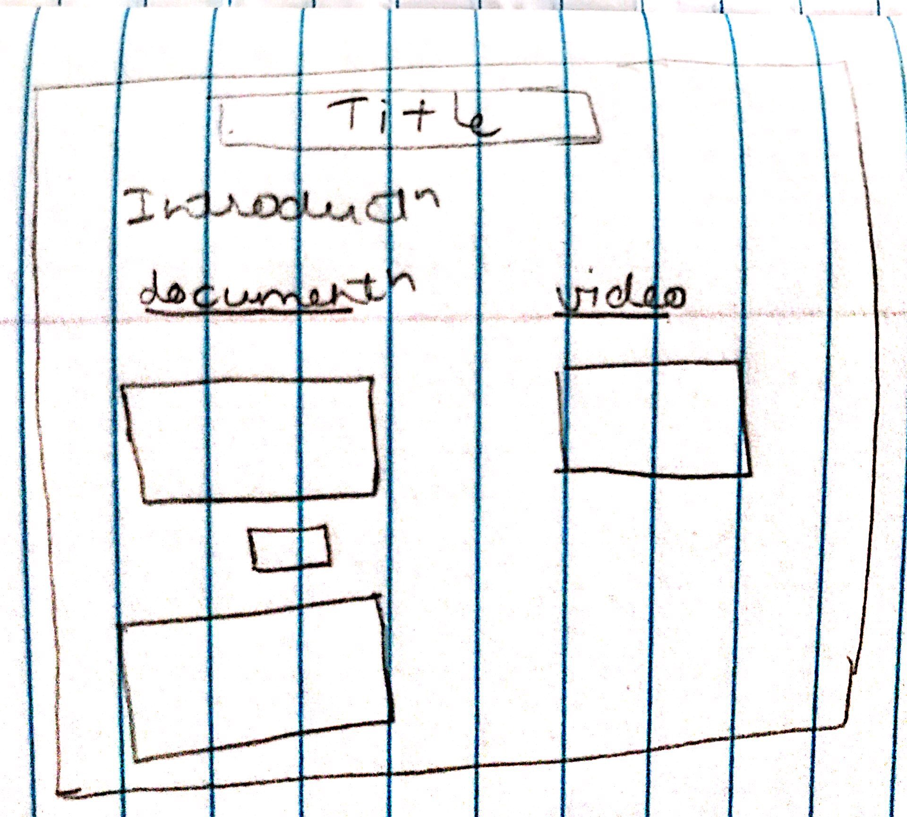
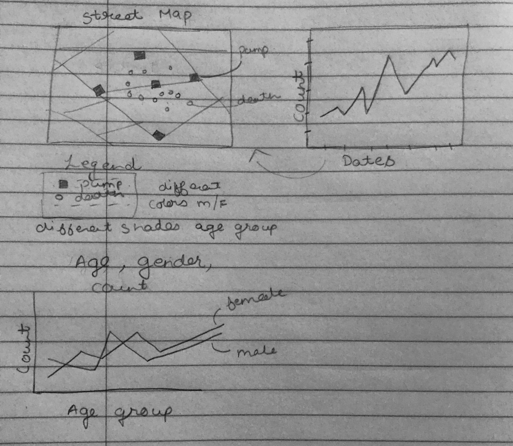
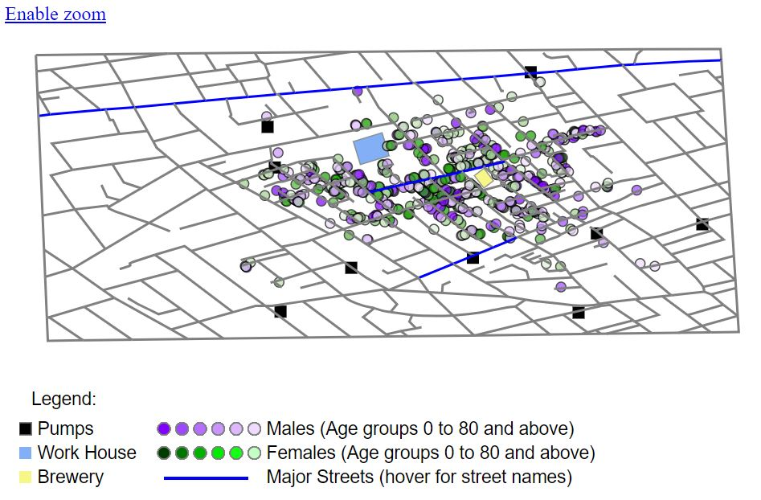
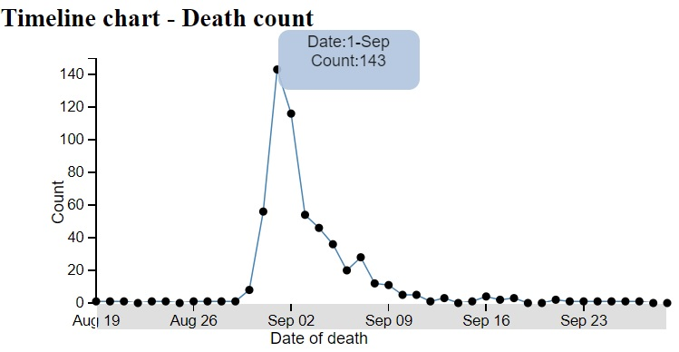
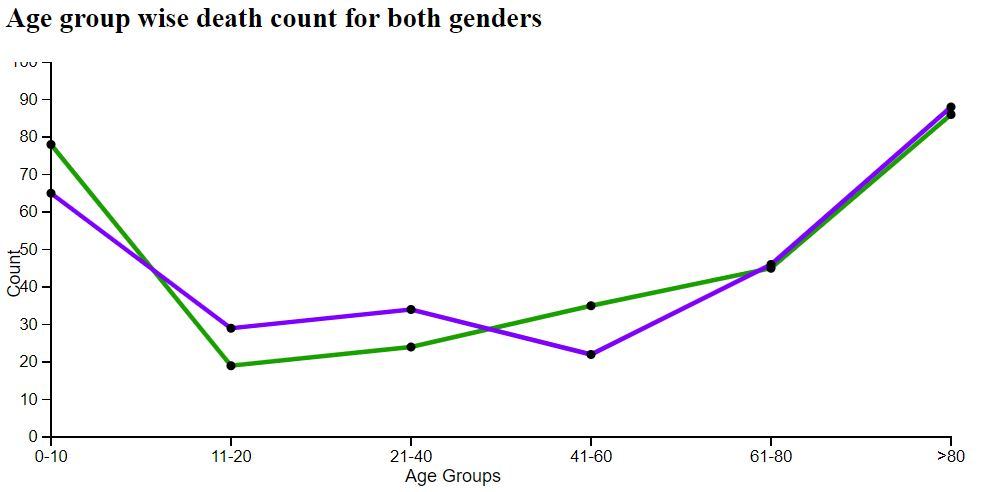

1854 Broad Street cholera outbreak visualization
This page gives the documentation of H516 Project 1 by PBAWAL of IUPUI. I have tried to document the process followed by me.
Design Process:
Since the requirement shared was very detailed and stepwise, I saved a lot of time.
My first target was to cover the basic requirements mentioned for grade C followed by B and then A. The sequence of tasks were as below:
- Plot the streets.
- Plot pumps.
- Plot death locations.
- Plot the timeline chart.
- Implement the third chart for death count by age and gender.
- Interaction between street map and timeline chart using brush(for window selection).
Once the basics were implemented, I started implementing the rest of the requirements.
- Street names, work house and brewery.
-Find the street co-ordinates and areas of work house and brewery and highlight it with different colors.
- Add labels to graphs.
- Add tooltips for most of the points and co-ordinates.
- Add zoom functionality.
- Add cluster selection ability.
- This was done with disabled zoom because mouse drag didnt work well with 2 listeners(panning and selection).
- Adding legend.
Initial design had a few paper drawings. Below are some that were actually used for implementation:
| Page layout design |
Graphs design |
Rationale of design:
The first visual had to be the street map with scatterplot since it is the most important part of this project.
Close to it should be the timeline chart as we have to show interaction between the two. It is easy when the user doesn't have to scroll up and down to see the changes in the map.
Since the third chart isn't interacting with other charts and is able to display information independently, I have placed it below the street map.
- Street Map:
I have chosen different shapes and colors for pumps and people for easy identification. Pumps are displayed as black rectangles and people as circles, males are displayed in shades of purple and females shades of green. The gradient of colors is used to differentiate different age groups. The darker shade is for younger people and shade gets lighter with more age. The tooltip over circles gives the details like gender, age group and date of death.
My original choice of colors for male and female was red and green, but that didn't work well for color blind people as per colorblindness simulation.
Since some of the important streets had to marked, I have highlighted those in blue. The tooltip over it gives the name of street.
The light blue rectangle is the work house whereas the lightyellow rectangle is the brewery.
The default view is zoom/pan enabled. Since panning affects cluster selection, I have disabled the zoom functionality to demonstrate clusters. I have used lasso plugin here for clustering which enables us to draw a cluster of any shape and determine the death count in that area.
- Timeline chart:
I have used line chart here since it is easy to show rise and fall of count with dates. Each point on graph has a tooltip to view date and count.
The filter for interaction between the two graphs is implemented using brush. The default selection is the entire range of dates. This can be modified with mouse by draging on the x axis. The end lines when dragged, extents the range. Dragging the window helps move the same width of window over the range. With modifications on the brush, the circles displayed on the street map change based on date of death.
- Death count by gender and age:
I have used multiple line chart to show the deaths of two genders over age groups.
The blue line shows female death trend and red line shows male deaths. Each point has a tooltip that shows details.
Discovery of facts:
- We know based on Dr John Snow's experiment that the deaths were concentrated around one of the water pumps. This is visible from the visualization with crowded plot around Broad Street.

- The spike in death count due to cholera happened on 1st September from 56 to 143 in a day.

- The area of brewery doesn't have many deaths since it is believed that people in this area had beer instead of water.
- There is difference is different gender deaths over different age groups. The group 0-10 has more female deaths than males, 11-40 has more male deaths than females and for ages above 60 there is not a significant difference in death count of males and females.

References:
Page created by Purvi Bawal - IUPUI